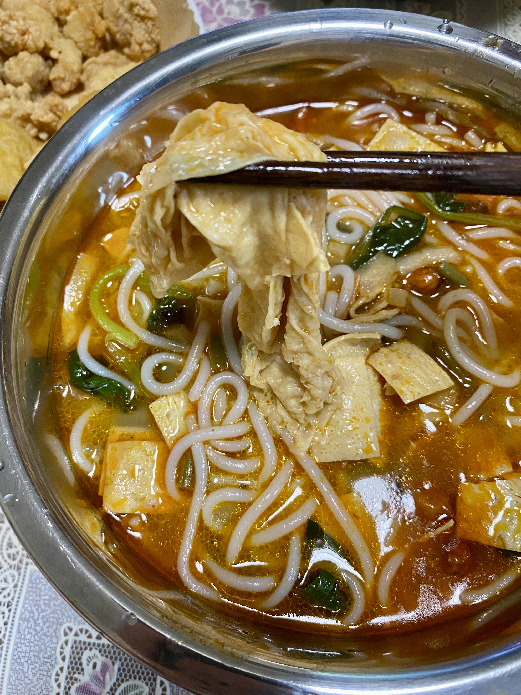
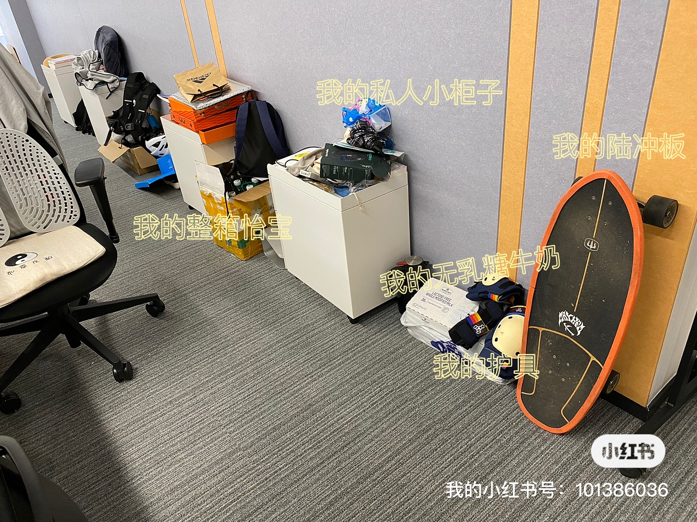

本周是学习陆地冲浪板的第五周，我对它的喜爱依然是热度不减，看来真的是找到自己的爱好了。
这周因为接到一个 P0 的项目，周六到公司加了天班，所以只上了一次课，这应该是我们搬到望京 SOHO 后第一次周末因为项目进度到公司加班，而且这几个月我印象中周末只加过 3 次班。第一次是 5 月份居家办公期间，也是接了个倒排期的需求，那时候是在家加班，正好小区也不能出去，加班还能换天调休。第二次是上个月到公司做校招的面试官，第三次就是昨天了。
这周学习了前两周学习过的荡板，课程最后十几分钟还学了 piovt 180。荡板是为 piovt 180 打基础，而 piovt 180 又是为尾刹 180 和 360 打基础，piovt 还可以跟 slide 180 连起实现 360 的旋转（如下边第一个视频），而且会了 piovt 180 就可以去刷碗池了。
别人的 slide180 接 piovt 180：
我的荡板练习：
我的 piovt 180 练习：
刷短视频的时候看到一个用陆冲刷街的小姐姐，太帅了！
今天北京一上午都在下雨，我上课的地方虽然是在一个地下二层的商业街，但是那个场地上边被建筑物覆盖了，练习的时候看着前后瀑布一样的雨水很惬意，而且因为下雨今天天气也格外凉爽。
开车来回的路上还是听了「谐聊」，这周讨论的是关于浪漫的话题。我也回想了一下，自己早在几年前也是个浪漫的人，尤其是高中和大学期间，现在越来越不浪漫了。当年我也写过藏头诗、拍过 MV、折过千纸鹤，用红楼梦里的一句话就是：「甚荒唐，到头来都是为他人作嫁衣裳」，后边有机会的话会聊聊这段历史，也算得上一段青葱岁月的浪漫往事。
这段时间由于转岗没多久的原因，有一段时间没请过假了，我目前有 12 天调休，11 天年假，几乎是用不完的状态。打算等再过一段时间手头工作捋顺了，准备假到「谐聊」现场收听几次。
上滑板课回来后吃了个超豪华的螺蛳粉，螺蛳粉里放了「炸响铃」兼职是太好吃了，还用空气炸锅炸了鸡块和鸡米花，看了一集极限挑战，饭后还吃了一根梦龙和榴莲千层切角，腐败了一个下午。

我工位后边的墙边已经被我的东西承包了。
